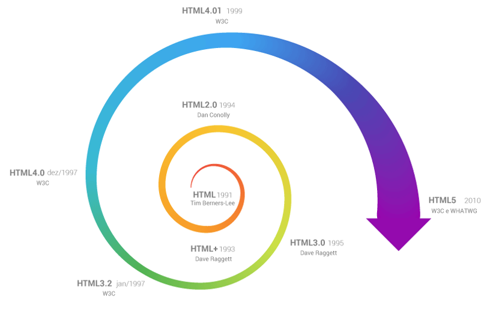

Introdução ao HTML
HTML (Hyper Text Markup Language) é uma Linguagem de Marcação de Hipertexto utilizada para criação de páginas da Web. Essa é a linguagem que o seu navegador (Browser) decodifica para exibir as páginas. (FERREIRA & EIS, ONLINE, p.7)
Evolução do html
Hipertexto pode ser definido como todo o conteúdo o qual se encontra inserido em um documento para a web, sendo que sua principal característica seria a possibilidade de se interligar a outros documentos também na web. (SILVA, 2011, p.20)
O HTML é baseado no conceito de Hipertexto. Hipertexto são conjuntos de elementos – ou nós – ligados por conexões. Estes elementos podem ser palavras, imagens, vídeos, áudio, documentos etc.

Os editores HTML são os softwares que utilizamos para criar as páginas da web empregando as linguagens de marcação e de estilo. Tais editores possuem diversas funcionalidades que auxiliam no processo de desenvolvimento da página, proporcionando, por exemplo a visualização do projeto tanto em linhas de códigos quanto em design de apresentação.